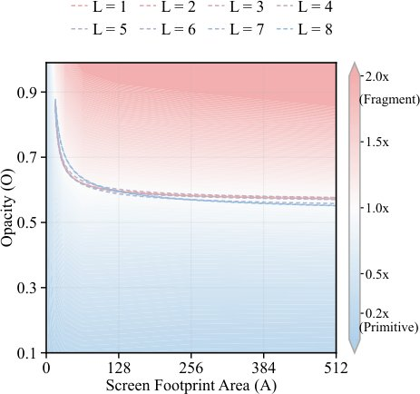
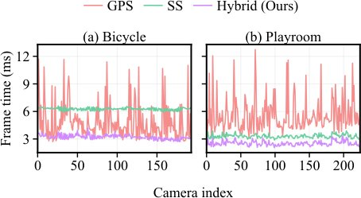

Gaussian Stippling: как ускорить 3D-рендеринг без потери качества

Традиционный 3D Gaussian Splatting требует глубокой сортировки примитивов, что замедляет рендеринг на слабых устройствах. Метод Gaussian Stippling заменяет альфа-смешивание стохастической выборкой, исключая необходимость сортировки. Гибридная система и нейросетевая реконструкция позволяют достичь высокой частоты кадров при сохранении визуальной четкости.
Главное
- Замена альфа-смешивания стохастической выборкой исключает сортировку примитивов.
- Гибридный рендерер оптимизирует нагрузку, распределяя примитивы по их прозрачности.
- Нейросетевая реконструкция подавляет шум, используя данные из прошлых кадров.
Подробнее
Стандартный 3DGS использует упорядоченное альфа-композитинг, где вклад каждого примитива рассчитывается через transmittance (пропускание) T_i(x) = Π_{j<i} (1-α_j(x)). Это требует сортировки по глубине (depth sorting), что становится «бутылочным горлышком» при большом количестве примитивов. Gaussian Stippling переходит к дискретной модели, где каждый примитив принимается с вероятностью, равной его альфа-значению, превращая задачу в стохастическую выборку.
Гибридный рендерер адаптивно распределяет примитивы между фрагментным и примитивным потоками на основе их проективной площади и прозрачности. Для подавления шума, возникающего при малом количестве выборок (1-spp), используется легковесная нейросеть, которая агрегирует данные текущего и прошлых кадров. При 1-spp конфигурации метод достигает 2,3–2,7-кратного прироста производительности по сравнению с базовым 3DGS при разрешении 1080p, сохраняя стабильность изображения.
Ограничения
Метод требует настройки количества выборок (spp) для баланса между шумом и производительностью, а качество зависит от эффективности обучения нейросети.
Подробный разбор статьи
Резюме
Традиционный метод 3D Gaussian Splatting (3DGS) опирается на попиксельную сортировку глубины и упорядоченное альфа-смешивание для корректной визуализации перекрывающихся примитивов. В данной работе предложен подход, исключающий сортировку за счет использования стохастической прозрачности: дробные значения альфа-канала заменяются дискретными выборками видимости. Этот процесс, названный авторами «гауссовым пунктиром» (Gaussian Stippling), позволяет реализовать рендеринг, не зависящий от порядка объектов. Система адаптивно объединяет примитивный и фрагментный методы пунктирования, что оптимизирует пропускную способность рендеринга.
Пояснение
Стохастическая прозрачность — это метод рендеринга, где вместо усреднения прозрачности многих слоев мы выбираем случайные точки, что избавляет от необходимости сортировать объекты по удаленности от камеры.
Для подавления пространственного и временного шума, возникающего при малом количестве выборок (spp), разработана облегченная нейросеть для пространственно-временной реконструкции. Она использует локальные атрибуты гауссианов, объединяя текущие данные с перепроецированными историческими наблюдениями. Модель обучалась на наборе различных сцен и способна работать с новыми данными без дообучения или изменения параметров 3DGS-активов.
При обучении под конкретную сцену компактная конфигурация с 1 выборкой на пиксель (1-spp) обеспечивает увеличение пропускной способности в 2,3–2,7 раза по сравнению со стандартным 3DGS при разрешении 1080p. Конфигурация с 16 выборками (16-spp) демонстрирует более высокое среднее значение PSNR на всех трех тестовых наборах данных, хотя и требует больших вычислительных затрат. Метод успешно протестирован на мобильном оборудовании в интерактивном режиме.
Важно
Предложенный метод повышает скорость рендеринга в 2,3–2,7 раза при 1-spp и улучшает качество изображения при 16-spp, обеспечивая работу на мобильных устройствах.
Введение
Технология 3D Gaussian Splatting (3DGS) обеспечивает синтез новых ракурсов в реальном времени через эффективную растеризацию явных гауссовых примитивов. Однако метод требует сортировки по глубине и упорядоченного композитинга, что становится узким местом при большом количестве примитивов или на устройствах с ограниченными ресурсами. Существующие альтернативы либо модифицируют парадигму рендеринга, либо изменяют структуру самих примитивов, что делает их несовместимыми с уже готовыми 3DGS-активами.
Важно
Предложенный метод «гауссова пунктирования» (Gaussian stippling) позволяет рендерить стандартные 3DGS-сцены без сортировки, используя стохастическую выборку видимости.
В отличие от стандартного 3DGS, где гауссовы пятна накапливаются непрерывно, стохастическое «пунктирование» генерирует дискретные непрозрачные образцы (stipples), конкурирующие через стандартный тест глубины. Существуют два подхода: фрагментное и примитивное пунктирование. Первый зависит от площади покрытия, второй — от количества образцов, определяемого непрозрачностью и проекцией. Авторы разработали гибридный рендерер, который распределяет гауссианы между этими методами в зависимости от их параметров, оптимизируя вычислительные затраты.
Пояснение
Стохастическая выборка (Monte Carlo) — это метод оценки сложного интеграла (в данном случае — прозрачности) через случайные выборки, что избавляет от необходимости сортировки объектов.
Осторожно
Использование малого числа выборок (low-spp) неизбежно порождает пространственный шум и мерцание, что требует дополнительной фильтрации.
Для устранения шума, возникающего при малом количестве выборок, авторы используют легковесную нейронную сеть пространственно-временной реконструкции. Она объединяет данные текущего кадра с информацией из предыдущих кадров, используя атрибуты гауссиан (непрозрачность, ковариация, глубина). Как показано на Рис. 1, такой подход позволяет эффективно подавлять шум без переобучения модели под конкретную сцену. Система демонстрирует высокую производительность на мобильных устройствах и поддерживает как универсальные модели, так и специализированные (с дообучением) для достижения максимального качества.
Нейронная реконструкция на основе стохастических выборок
Синтез высококачественных изображений из разреженных, неструктурированных геометрических прокси-объектов является ключевой задачей в рендеринге на основе изображений. Методы нейронной графики на основе точек (NPBG) и сопутствующие фреймворки отложенного нейронного рендеринга доказали, что глубокие сверточные сети (например, U-Net) способны эффективно восстанавливать плотные фотореалистичные изображения из разреженных растровых признаков. В данной работе мы расширяем этот подход, учитывая стохастические изменения видимости при многократном рендеринге одного и того же ракурса, адаптируя парадигму отложенного рендеринга для работы с перекрывающимися полупрозрачными гауссовыми примитивами.
Реконструкция из стохастических выборок опирается на методы фильтрации шума в трассировке путей, где глубокие нейронные сети используются для обработки зашумленных данных. В отличие от традиционных методов, наш подход сохраняет локальные дескрипторы Гаусса для каждого наблюдения. При использовании нескольких наблюдений на кадр мы усредняем эти дескрипторы по каналам перед реконструкцией. Вспомогательные признаки, такие как глубина и альбедо, служат ориентирами, однако, поскольку одна поверхность не может описать вклад всех перекрывающихся «сплэтов» Гаусса, мы извлекаем дескрипторы, кодирующие проекцию, непрозрачность и глубину примитивов.
Пространственно-временное выравнивание критично для повышения качества при рендеринге с частотой 1 сэмпл на пиксель (1-spp). В отличие от стандартных конвейеров, использующих обратную репроекцию векторов движения поверхности, мы применяем прямую репроекцию карт наблюдений, так как стохастический характер 3DGS делает видимость конкретного гауссиана нестабильной. Наша сеть обучается объединять текущие и исторические данные, поступающие в качестве раздельных входных сигналов.
Важно
Метод объединяет локальные дескрипторы Гаусса и прямую репроекцию исторических данных, что позволяет восстанавливать качественные изображения из зашумленных стохастических выборок.
Метод
Для фиксированного обученного представления 3D-Гауссианов G и целевой камеры C_t в кадре t задача состоит в реконструкции изображения без модификации сцены. Процесс состоит из двух этапов (Рис. 2). Сначала гибридный рендерер направляет каждый примитив в поток выборки на основе примитивов или фрагментов, создавая разреженное изображение. Затем каждое принятое наблюдение дополняется локальным дескриптором, а исторические кадры проецируются вперед в целевой вид. Легковесная сверточная сеть D_θ агрегирует эти данные.

Полное описание рисунка
Рисунок 2: Обзор предложенного нами конвейера гауссовой пунктирной отрисовки и реконструкции. На этапе 1, при наличии 3DGS-актива, содержащего N гауссовых примитивов, стратегия маршрутизации с учетом стоимости распределяет NF примитивов в поток на основе фрагментов, а оставшиеся примитивы — в поток на основе примитивов, который генерирует NP стохастических точек выборки. Затем общий тест глубины выбирает принятые точки пунктира вместе с их локальными гауссовыми дескрипторами для формирования наблюдения текущего кадра. На этапе 2 сеть реконструкции агрегирует текущее наблюдение и исторические наблюдения, спроецированные вперед, для создания реконструированного изображения.
Для каждого кадра мы генерируем M независимых стохастических проходов и усредняем их дескрипторы для получения O_t^M (бюджет выборок Mspp). Итоговый входной тензор X_t формируется путем конкатенации агрегированных карт текущего кадра и K=3 предыдущих кадров. Процесс реконструкции описывается формулой \hatIt = D_ heta(Xt).
Пояснение
Прямая репроекция — это перенос данных из предыдущих кадров в текущий вид на основе их известных координат, что помогает компенсировать нехватку информации в текущем «шумном» кадре.
Гибридная генерация стохастических наблюдений
Метод основан на вероятностной интерпретации альфа-смешивания в 3D Gaussian Splatting. Для каждого пикселя x и гауссиана i с параметрами (µi, \Sigmai, oi, ci, zi) вводится бинарный индикатор принятия \hatαi(x) ~ extBernoulli(αi(x)). Гауссиан сохраняется, если \hatαi(x)=1, иначе отбрасывается. Среди принятых кандидатов выбирается ближайший по глубине z_i. Математически доказано, что такой подход является несмещенной оценкой стандартного альфа-композитинга, так как математическое ожидание цвета пикселя E[\hatIST(x)] совпадает с результатом классического рендеринга IGS(x).
Важно
Стохастический отбор на основе распределения Бернулли позволяет получить несмещенную оценку цвета, эквивалентную классическому альфа-смешиванию, при условии корректного распределения примитивов по потокам обработки.
Для оптимизации производительности используется «маршрутизация» (routing) примитивов. Гауссианы с большой площадью проекции A = \pi \sqrt/\Sigma/ эффективнее обрабатывать через растеризацию (фрагментный поток), а с малой — через генерацию точек (примитивный поток). Критерий выбора определяется функцией регрессии S(o, A) = β0 + β1 \log2 A + β2 o + β3 o \log2 A. Если S(o, A) > 0, примитив направляется в фрагментный поток, иначе — в примитивный.
Пояснение
Маршрутизация — это динамическое распределение нагрузки: крупные объекты рендерятся аппаратно (фрагменты), а мелкие — через генерацию случайных точек (примитивы), что экономит ресурсы GPU.
В примитивном потоке используется пуассоновский процесс с интенсивностью λ = 2A Li₂(o). Координаты точек x генерируются с помощью обратного преобразования Бокса-Мюллера, учитывающего ковариационную матрицу \Sigma через разложение Холецкого.
Фрагментный поток выборки
Во фрагментном потоке гауссианы растеризуются в пределах области \Omega с учетом порога отсечения τ_F. Эффективная вероятность принятия составляет αeffF(x) = α(x) · 1x \in \Omega · 1α(x) > auF. Для объединения результатов из обоих потоков гибридный рендерер выбирает примитив с минимальной глубиной z_p из объединенного множества кандидатов AP(x) \cup AF(x).
Пространственно-временные гауссовы наблюдения
Для каждого наблюдения формируется 10-канальный дескриптор s_t(x) = [c(x), α(x), δ²(x), o, q, z⁻¹], где δ²(x) — квадрат расстояния Махаланобиса, а q — коэффициенты ковариации. Усреднение M независимых выборок дает карту наблюдений OM_t(x). Итоговый входной сигнал для нейросети X_t(x) формируется путем конкатенации карт OM для текущего и K=3 предыдущих кадров, спроецированных в текущий момент времени t методом forward warping.
Нейронная реконструкция
Процесс реконструкции базируется на архитектуре U-Net, дополненной попиксельным MLP-блоком. Итоговое изображение \hatIt формируется путем объединения локальных признаков Flocal^t (от MLP) и контекстных признаков Fcontext^t (от U-Net). Обучение проводится с использованием функции потерь L, состоящей из Charbonnier-штрафа Lchar и члена согласованности градиентов Lgrad с весовым коэффициентом λgrad: L = Lchar + λgradLgrad, (2) Lchar = \frac1N \sump \sqrt\/\hatIt(p) - IGTt(p)\/2 + \epsilon2, (3) Lgrad = \frac1N \sump \sumd \in \x,y\ \/ ablad \hatIt(p) - ablad IGTt(p)\/1, (4) где N — число пикселей, а ε — малая константа. Градиентный член критически важен для сохранения четкости границ и локальных структур.
Важно
Использование комбинации Charbonnier-потерь и градиентного согласования позволяет эффективно восстанавливать детали изображения, сохраняя структурную целостность границ.
Экспериментальная установка
Оценка проводилась на 11 сценах из наборов Mip-NeRF 360, Tanks and Temples и Deep Blending. Для каждой сцены обучалась отдельная сеть, при этом Gaussian-представление оставалось фиксированным. Между кадрами исходных данных вставлялось не менее K ≥ 3 промежуточных видов с ограничением смещения камеры в 0,05 единиц сцены и поворота в 3^°. В качестве базовых методов для сравнения использовались Stochastic Splats (SS), Gaussian Point Splatting (GPS), MobileGS и MiniSplatting.
Пояснение
Gaussian-представление — это метод представления 3D-сцены в виде набора 3D-гауссиан, которые «растекаются» (splatting) на плоскость изображения для рендеринга.
Реализация выполнена на PyTorch (обучение) и Vulkan/GLSL с использованием TensorRT (инференс). Оптимизация проводилась 2000 эпох через AdamW с линейным прогревом (100 эпох) и косинусным затуханием learning rate от 1 × 10⁻⁴ до 5 × 10⁻⁶. В каждой эпохе использовалось семь случайных кропов 256 × 256.
Сквозная реконструкция
Версия Ours-S при 1 spp достигает 283,17–305,32 FPS, что в 2,3–2,7 раза быстрее 3DGS. Более тяжелая модель Ours-L (16 spp) превосходит 3DGS по PSNR. Время реконструкции составляет 1,78 мс для Ours-S и 11,31 мс для Ours-L. Аблационные исследования (Таблица 2) подтверждают важность временной истории и дескрипторов: удаление истории снижает PSNR, тогда как вклад отдельных дескрипторов менее выражен. При кросс-сценовой оценке на данных DL3DV (Таблица 3) модель Ours-S показывает более высокий PSNR, чем базовые методы SS и GPS, хотя и уступает стандартному 3DGS.
Таблица 2. Абляция временной истории и локальных дескрипторов Гаусса с использованием Ours-S
| Метод | Mip-NeRF360 (PSNR↑/SSIM↑/LPIPS↓/FPS↑) | Tanks&Temples (PSNR↑/SSIM↑/LPIPS↓/FPS↑) | Deep Blending (PSNR↑/SSIM↑/LPIPS↓/FPS↑) |
|---|---|---|---|
| StochasticSplats | 17.29/0.2427/0.8942/664.95 | 13.30/0.1754/0.9961/843.08 | 21.61/0.3562/0.8063/556.03 |
| Gaussian Point Splatting | 17.28/0.2413/0.8947/620.56 | 13.30/0.1749/0.9961/440.99 | 21.60/0.3559/0.8065/438.95 |
| Ours (1-spp) | 17.28/0.2407/0.8947/880.07 | 13.29/0.1738/0.9965/1001.78 | 21.61/0.3559/0.8065/1024.15 |
| 3DGS | 28.90/0.8708/0.1856/122.18 | 23.39/0.8421/0.1837/113.19 | 29.52/0.9038/0.2459/111.18 |
| MobileGS† | 28.20/0.8570/0.2103/234.97 | -∗/-∗/-∗/-∗ | 30.07/0.9109/0.2486/292.26 |
| Mini. + Ours (1-spp + S) | 26.92/0.8055/0.2607/345.31 | 22.31/0.7723/0.2830/343.51 | 29.48/0.8983/0.2703/344.11 |
| Ours (1-spp + S) | 27.72/0.8120/0.1949/283.17 | 22.72/0.7780/0.2075/305.32 | 29.33/0.8952/0.1895/301.10 |
| Ours (4-spp + S) | 28.23/0.8344/0.2321/159.59 | 22.98/0.7904/0.2656/173.77 | 29.48/0.8999/0.2591/160.01 |
| Ours (16-spp + L) | 29.08/0.8606/0.1561/40.43 | 23.68/0.8252/0.1570/40.36 | 29.70/0.9065/0.1735/38.05 |
Все значения PSNR оценены относительно стандартной цели 3DGS.
Таблица 3. PSNRonheld-outDL3DVviewswithrespectto photographic ground truth. Avg. is the arithmetic mean over the five scenes. The best and second-best values are shown in bold and underlined, respectively. SS (4-spp), GPS (4-spp), and Ours (1-spp + S) run at 353.32, 282.91, and 353.43 FPS, respectively.


Осторожно
Результаты зависят от конкретной сцены; при кросс-сценовой валидации модель демонстрирует хорошую обобщающую способность, но не достигает точности 3DGS, обученного на целевых данных.
Применение: мобильное развертывание и совместная обработка графики и вычислений
Авторы адаптировали предложенный метод для мобильных платформ, чтобы проверить его эффективность в условиях ограниченных вычислительных ресурсов. При разрешении 540p разработанный рендерер демонстрирует среднюю производительность 92,6 FPS. Для сравнения: показатели Stochastic Splats (SS) составляют 53,3 FPS, а Gaussian Point Splatting (GPS) — 49,0 FPS. При использовании компактной нейросетевой архитектуры для реконструкции, работающей на встроенном нейронном процессоре (NPU), скорость достигает 73,2 FPS.
Важно
Метод обеспечивает 92,6 FPS при 540p, что значительно превосходит показатели аналогов (SS — 53,3 FPS, GPS — 49,0 FPS), сохраняя работоспособность на мобильных устройствах с NPU на уровне 73,2 FPS.
В качестве базовой линии для 3DGS-GL использовался алгоритм Splatapult. Интерактивная реализация дополнительно включает механизм репроецированного временного накопления (reprojected temporal accumulation) для повышения качества итоговых изображений. Сравнительные данные по производительности (FPS) для различных сцен представлены в Таблице 1.
Таблица 1. Quality against ground truth at the training resolution; throughput at 1080p. The first three rows report renderer-only FPS; Ours-S/L rows include rendering and reconstruction. Best/second-best PSNR and FPS within each block are bold/underlined; tiessharerank.∗MobileGSoptimizationproducedNaNsonTanks&Temples.†MobileGSFPSincludesitsview-dependent MLP (TensorRT) and rasterization; its released timing code omits the MLP.


Пояснение
Репроецированное временное накопление — это метод улучшения качества картинки путем объединения данных из текущего и предыдущих кадров с учетом движения камеры, что позволяет сгладить шум без потери детализации.
Таблица 1. Сравнение производительности (FPS) на различных сценах
/ Метод / Грузовик / Комната / Доктор Джонсон / Ср. / / :--- / :--- / :--- / :--- / :--- / / 3DGS-GL / 5,46 / 12,8 / 3,2 / 7,15 / / SS / 24,8 / 65,8 / 69,4 / 53,3 / / GPS / 41,3 / 52,8 / 53,0 / 49,03 / / SortfreeGS / 37,2 / 50,3 / 27,2 / 38,2 / / MobileGS / – / 32,6 / 28,1 / 30,4 / / Наш (1-spp) / 78,8 / 112,7 / 86,3 / 92,6 / / Наш (1-spp + S) / 64,6 / 86,7 / 68,3 / 73,2 /
Заключение
Основные выводы и ограничения
Представленный метод основан на использовании гауссовского стохастического сэмплирования, что позволяет выполнять рендеринг 3D-сцен без необходимости предварительной сортировки элементов. Преобразуя непрерывные гауссовские сплэты в дискретные выборки видимости, гибридный сэмплер объединяет преимущества примитивно-ориентированного и фрагментно-ориентированного подходов, не требуя при этом изменения исходных данных 3DGS. Пространственно-временная реконструкция с учетом гауссовской структуры интегрирует текущие и накопленные данные, что эффективно подавляет шум при малом количестве выборок на пиксель.
Важно
Метод обеспечивает эффективный рендеринг без сортировки, объединяя стохастическую выборку и пространственно-временную фильтрацию для подавления шума.
Система поддерживает два режима работы: использование фиксированной модели реконструкции для различных сцен и индивидуальную настройку под конкретную сцену для достижения максимального качества. Основным ограничением является склонность к чрезмерному сглаживанию высокочастотных деталей при работе с разреженными стохастическими данными. Это особенно заметно на тонких структурах, резких границах видимости и эффектах, зависящих от угла обзора.
Осторожно
При низких частотах дискретизации возможна потеря мелких деталей из-за сглаживания, что обусловлено ограниченным объемом данных и спецификой целевой функции реконструкции.
Перспективным направлением развития является создание сквозного (end-to-end) обучения, при котором гауссовское представление, стратегия сэмплирования и нейронная сеть реконструкции оптимизируются совместно. Такой подход позволит лучше сохранять мелкие детали, однако потребует дополнительных вычислительных затрат на оптимизацию под конкретную сцену, в отличие от текущего метода развертывания с фиксированными активами.


Схема исследования
Препринт не проходил рецензирование. Выводы предварительные.
Источник
| Источник | Категория | Лицензия |
|---|---|---|
| arXiv | cad_parametric | arxiv |
Источники
| Источник | Ссылка |
|---|---|
| Страница препринта | arxiv.org |
| Полный текст (PDF) | arxiv.org |
| DOI | doi.org |
| Метаданные Crossref | api.crossref.org |
| Europe PMC | europepmc.org |